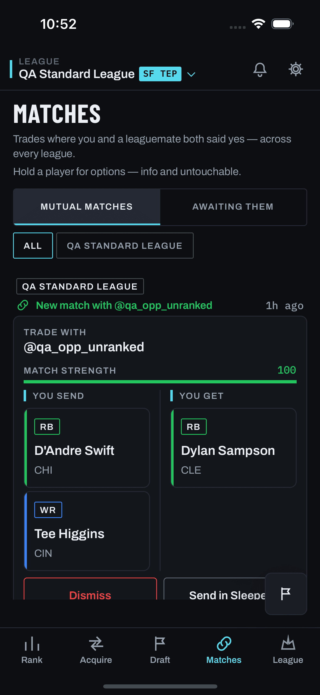

Design lab for feedback item #403. Pick one player, "shop" him, and browse
trade ideas in three modes — Tier up / Tier down / Same value — as a
horizontal pager of cards with a 1 / X counter and a per-card like/dismiss pair.
Drawn against the Phase 1 doc round, which is the contract:
docs/feedback/items/402-more-offers-shop/{prd,lld-delta,hld-delta,scope,reconciliation-log,rulings-2026-08-27}.md.
This lab does not re-open any decision those documents settled.
This is a mockup. It is not shipped code and must never be cited as current app
behavior (mockups/CLAUDE.md). The engine behind it already ships —
POST /api/trades/asset-ideas, flag trade.asset_ideas = true.
#403 is a front door and a browser, plus one narrow parameter.
Written waiver, honored. scope.md §3 records that the
screens/ capture library is frozen at 2026-08-11 (D-056 retired the
simulator entirely) and holds no capture of the single-pin / asset-ideas surface
and none of the long-press player menu — screens/mobile/trades/ has only
empty, empty--cold, error, format-gate,
generating, loading, populated, and there is no
sheets-player-menu directory at all. No capture can be requested; the harness
that made them is retired.
Substitute, per the waiver: the code-walk. Every frame on this page marked
reconstructed was drawn by reading the
live source — PlayerContextMenu.tsx, MatchesScreen.tsx
(menuActionsFor at :1568), TradeCard.tsx,
PlayerCard.tsx, TradeValueBar.tsx, Toast.tsx,
FeedbackFAB.tsx, RootNav.tsx and
chalkline/{Button,Badge,TickLabel,Icon,Card}.tsx — and is
a reconstruction, not a capture. It is never presented as one.
Deliberately not used as a substitute:
mockups/polish-lab-2026-08/asset-ideas-layout{,-v2,-v3}.html.
scope.md names them as not-a-substitute and they are not consulted here.
One real capture IS embedded, because one exists: §1's host screen,
screens/mobile/matches/populated--mutual.png, captured
2026-08-10T15:03Z. That satisfies rule 1 of the interim posture in
mockups/CLAUDE.md ("embed a real capture whenever one exists"). Drift to
declare: MatchesScreen.tsx has 7 commits since the capture date
(9d983be4, 14a4ce47, 248ad68e, 88278100,
7057d861, 151e3e29, ae0ec6b4) — chiefly #334/#335
segment counts and #362 standing offers. Read it as ground truth for its own build, not as
today's pixel truth.
No emoji anywhere · no gradients · no blur / glassmorphism / translucent surfaces ·
no backdrop-filter · fonts are Barlow Condensed / Archivo / IBM Plex Mono
only · no radius above 8px except true pills · ice #56D9EC on actions
(active mode chip, Like, Undo) · flare never appears on this surface at all (R-14) —
the only flare on this page is in the lab's own prose chrome, never inside a phone frame.
Position hexes are data encodings from docs/cross-client-invariants.md, used on
position chips and player rails only, never as chrome.
One pin — Tee Higgins (WR, CIN, 27 yo) — shopped from the Matches tile he
actually appears on in the embedded capture, so §1's real pane and every reconstructed pane
after it are talking about the same player. Real players, plausible values, no placeholders.
Per-player value numbers are deliberately absent from the cards: PlayerCard
stopped rendering them app-wide (PlayerCard.tsx:55-58), and the swing lives in
the TradeValueBar.
The operator ruled #402 and #403 one experience
(rulings-2026-08-27.md): shop is what the deck's give-side
"more offers" button does, presented inline below the trade chip — #402's own
words. There is no pushed screen and no Matches long-press entry. The frames in this
block are the buildable surface; the rev-1 sections below keep their content designs
(modes, tiles, empties, undo — all carried into the strip) but their entry and surface
frames are superseded and are tagged as such.
What a tap no longer does: no finder pin, no deck reset, no #288 snapshot. The deck holds still — its like/pass pan is disabled while the strip is open — and closing the strip restores nothing because nothing moved. R-1′ · R-2′
TradeCard.tsx:431-446) — except the
give-side label.TradeCard.tsx comment). The control relabels to "More
offers" (the "Keep ·" prefix described a pin that no longer happens); tapping it opens
the strip — frame R2·2. The receive-side button keeps today's label and today's
pin-and-regenerate behavior, byte-identical. Flag off: both sides read and behave exactly
as today. R-1′ · R-17PlayerContextMenu construction, never navigation — the deck stays mounted).
Pick a row → the strip opens for that asset; Cancel → nothing.
Give-side only, always (rulings-2026-08-27.md §C).
LLD §0.2FlatList horizontal
pagingEnabled, no Gesture.Pan anywhere (HLD D-2). The
1 / X is chalk-dim, never flare. R-2′ · R-4 · R-5swap_positions (HLD D-3, unchanged by rev 2). Updated to the
2026-08-28 ruling ("Offer it"): the shopped player's own position (WR) is a
selectable chip — "WR laterals plus RB laterals" is expressible; selecting
only WR is server-equivalent to no selection; PICK is never offered (the server
400s it). Multi-select; invalid positions are a 400, not a silent empty.
R-10 · R-11 · R-12 · R-2026-08-28-BX decrements (the counter cannot lie). Rev-1 section 6's full
state walk still applies — only the host changed. R-8 · R-9Sections 1 and 2 are superseded (Matches long-press entry;
pushed full-screen surface) — kept for the record and tagged. Sections 3–7 carry:
the position picker, empties, like/refusal rails, dismiss/undo walk and the open design
calls all apply to the strip unchanged, except that every "screen" becomes the strip and
every screen analytics prop becomes 'Trades'.

screens/mobile/matches/populated--mutual.png. The affordance line
"Hold a player for options — info and untouchable." is already on screen, and Tee Higgins
sits in the YOU SEND column of the mutual-match tile — a player the caller owns,
which is the only side where shopping him means anything (direction:'give').
7 commits have touched MatchesScreen.tsx since this capture.PlayerContextMenu.tsx + MatchesScreen.tsx's
menuActionsFor (:1568), over the real capture dimmed by the
app's own scrim rgba(7,9,12,0.78). The menu on Matches has exactly one
row today, and only on the give side. Nothing here changes with
trade.shop_asset off — the row is not pushed into the array, so
PlayerContextMenu maps an identical list. R-17trade.shop_asset on. One appended
PlayerMenuAction, copy verbatim from lld-delta.md §4.4, testID
player-menu.shop. The 3px ice edge on the row is lab annotation only
— it marks the new row for the reviewer and is not proposed UI; the shipped row is an
ordinary menu row. R-1(a) The row is not restricted to the give side.
lld-delta.md §4.4's snippet appends the action inside the flag branch with no
side === 'give' guard, but menuActionsFor is called for
both columns of a match tile (MatchesScreen.tsx:1568), and today's only
row is guarded that way. With the snippet as written, long-pressing a league-mate's
player in YOU GET would offer "Shop this player" for a player the caller does not
own — and direction is hard-coded 'give' (Q-C), so the sweep would
ask "what can I get for a player that isn't mine". This lab draws the row on the give
side only. An operator/build call is needed: guard it, or accept the row on both sides.
(b) Placement. The LLD appends, so "Shop this player" lands below "Mark untouchable". Drawn as specced. If the operator wants the item's headline feature first in the menu, that is a one-line reorder — flagged, not decided here.
components.md §335 forbids
("count renders only once the list's first fetch resolves"). Copy is the shipped
string for this exact sweep — AssetIdeasPanel.tsx:175's
"Sweeping rosters…" — not a new one. Decision pair renders disabled at 45%
opacity rather than disappearing, so the layout does not jump.tier_up (the default on open).
Card body is the shipped TradeCard mounted exactly as
FeaturedTradeWindow.tsx:91-95 mounts it — hideMatchStrength,
and no disposition prop, so the card renders none of its own like/pass controls and
#403's row below is the only decision surface A-11. Counter is
TickLabel construction (3×14 ice tick) with the numerals in Plex Mono chalk-dim —
never flare R-5 · R-14. Header is the native stack header
with gestureEnabled:false; the chevron is the only back control
R-2. FeedbackFAB bottom-right,
activeScreen="ShopAsset" R-2.relaxed idea. The counter tracks
the page — a mode switch reloads the pager and resets it to 1 / N
R-5. The hairline "Stretch — outside your fairness band" line
is a design call the PRD does not make: the response carries
relaxed (#189 refill) and the panel this surface replaces already prints
that exact sentence (AssetIdeasPanel.tsx:112), but TradeCard
does not render it and #403 must not edit TradeCard. Drawn here in the
pager cell above the card, in the shipped fitRow construction (6px hollow
chalk-dim square + bodySm). Strike it and relaxed ideas become
indistinguishable from band-passing ones.same_value — the two tier modes never show it
R-10. An empty selection is the shipped #198 behavior
(same position back) and the hint line says so in words, because a row of four
un-selected chips otherwise reads as "no results filter applied" rather than
"WR for WR". swap_positions is omitted from the request body, never
sent as [] R-17 · A-6.swap_positions:["RB","TE"] replaces the same-position predicate for
lateral and touches nothing else — the Tier up / Tier down counts on the
chips are unchanged from the frames above R-11. The
Same value count drops 3 → 2, which is the honest consequence of a narrower
band: cross-position laterals are structurally rarer (spike S-2). Selected chip =
ink-3 well + ice ring, with the position hex kept on the text and
border so the data encoding survives selection.PositionChip/posColor, reused and never restyled
(docs/cross-client-invariants.md) R-14. Order is
fixed QB→RB→WR→TE. The pin's own position stays selectable (picking WR here is
the same request as picking nothing, and both are legal — lld-delta.md
§3.4 row 4). (c) is a design call: the LLD says an avoided position is
omitted from the row (#360), which silently shortens it — a second chalk-faint
line says why, so a missing chip is never mistaken for a bug. Strike the line and the
omission is invisible.shop.empty.screens/mobile/trades/error.png (2026-08-10). The inline
block beneath it is a design call: a toast expires and would leave a blank screen
with no way forward, so the recovery lives on the screen. Mode chips show no counts —
nothing resolved, so nothing may be claimed. The third line exists because this screen
queues real offers and moves a real board; after a failure the user deserves to be told
neither happened.type.body line is the
shipped sentence for exactly this outcome (AssetIdeasPanel.tsx:179),
reused rather than rewritten, so the two surfaces cannot drift. All three mode
chips read 0; the pager, counter and decision row are absent.1 / 6 and the same card is on
screen, because a like is not a disposition that advances a deck
R-4. No optimistic UI: the Like button disables until the
server answers (busyKey), then the toast is
queueCalcTrade's own returned descriptor — reused, never re-written
R-6. Toast is top-anchored with a --pos rail, per
Toast.tsx.queueCalcTrade.ts (:79-99 and queueRefusalLine
:31-49) — the whole point of reusing that helper is that the six refusal
reasons cannot drift between the calculator's like cell and this one. #403 writes no new
refusal copy. The Undo action is ice, hairline-separated, full bubble height
(Toast.tsx:117-130): flare would be wrong on an actionable control
R-14.1 / 6 → 1 / 5 and the Tier up chip drops 6 → 5 with it:
the counter, the chip count and the pager all read the same locally-filtered list
R-5 · A-8. The next idea is already on screen. For five seconds
the only thing that has happened is local.restoreIndex), the counter and the chip count go
back to 6, and the toast is gone. No new toast fires — a confirmation that nothing
happened would itself be noise. Nothing needs reversing: the POST was never sent,
so swipe_decisions, trade_decisions and the Elo board were
never touched R-9.| When | What has happened |
|---|---|
| t = 0 Dismiss tapped |
Card removed from the pager. Counter and chip count drop by one. Toast shows with Undo. No network call is made on this path at all. |
| t < 5 s Undo tapped |
The pending timer is cleared and the card comes back at its old index. Nothing is reversed, because nothing was written. That is why the copy needs no caveat. |
| t = 5 s window closes |
POST /api/trades/swipe · decision:'pass' fires under the
asset-idea:<key> id. Elo moves at trade_k_pass
and the permanent dismiss-cooldown binds — the package will not be served
again R-8. |
| Second dismiss before the window closes |
The older pending write is flushed first, then the new one arms. At most one pending dismiss ever exists, and only the newest offers Undo. |
| Back / mode switch / refetch | Flushes the pending write early. Leaving commits — a disposition is never silently lost. |
UNDO_HOLD_MS changed. A promise-flavoured line
("Won't be offered again") was rejected outright: it is false for five seconds,
which is precisely the failure mode #403 was warned about.Everything in this table is a call this lab made because the contract is silent, not a decision the doc round handed down. Each is independently strikeable.
| # | Call | Why | If struck |
|---|---|---|---|
| D1 | Mode chips carry a live idea count (mono numeral, chalk-dim) | All three groups arrive in one response (lld-delta.md §4.3), so the
counts are free and already in hand. They make the empty state navigable instead
of a dead end. |
The empty state has to name the other modes' counts in prose, or stop claiming them. |
| D2 | Counts are suppressed until the first fetch resolves | components.md §335: "count renders only once the list's first fetch
resolves (no fabricated 0)". | — |
| D3 | ‹ › step buttons flanking the counter, disabled at the ends | Horizontal paging is invisible until you try it, and this screen has no other
hint that a swipe does anything. They are ordinary scrollToIndex
calls — no gesture handler, so A-7 is untouched — and
they give the pager a 44pt non-gestural control.
Beyond the PRD: they are not in R-4 and have no testID in
lld-delta.md §9 (they would need shop.prev /
shop.next). |
The pager is swipe-only. Nothing else changes. |
| D4 | Counter numerals in Plex Mono, not a pure Archivo
label |
R-5 says "label-type TickLabel in chalk-dim"; the design system says
data numerals are always Plex Mono, and components.md's mono-count
convention is exactly "label text + bare data numeral at the 11px
floor". The ice tick and chalk-dim colour are kept, and it is
not flare. |
Set the numerals in Archivo 600 11. The A-8 assertion is unaffected either way. |
| D5 | Picker header reads "Same value at" (TickLabel) | Uses the settled vocabulary and completes the sentence the chips finish. "Swap"
was avoided on purpose — reconciliation-log.md rejected it for
colliding with SwapPlayerSheet. |
Chips stand alone under the Same value chip. |
| D6 | Picker hint copy — "Nothing picked — ideas come back at WR, the position you're shopping." / "Ideas come back at RB or TE." | The LLD requires a hint for the empty selection but does not write one; the selected-state line is symmetric and stops the row from being the only signal. | Falls back to whatever the build agent writes — a copy divergence waiting to happen. |
| D7 | A chalk-faint line explains an omitted position ("QB isn't offered — you're avoiding QB in this league.") | #360 omits avoided positions from the row, which silently shortens it. A missing chip and a bug look identical without this. | The row just has three chips and no explanation. |
| D8 | Selected chip = ink-3 well + ice ring, position hex
kept on border and text |
The LLD says "filled well + ice ring"; this resolves how that coexists with the position colour, which is a data encoding and may not be replaced by selection. | — |
| D9 | Loading reuses "Sweeping rosters…"; counter absent; decision pair disabled rather than hidden | The string already ships for this exact sweep
(AssetIdeasPanel.tsx:175). A disabled pair keeps the layout from
jumping when data lands. | — |
| D10 | Empty state gains a heading, a one-sentence "why", a
Clear positions — 3 at WR button, and a pointer to the mode chips |
R-15 fixes the two honest lines but stops there, and the PRD itself predicts this
state will be common. An empty screen that only apologises is the failure mode.
The count in the button label follows the shipped
RankImportSheet pattern ("Apply N ranks — M to resolve"). |
Two lines and no way forward. |
| D11 | Three empty variants, not one (selection-empty · mode-empty · sweep-empty), the last reusing the shipped "No defensible packages found around this asset right now." | The three have different causes and different recoveries; one generic line would
offer a Clear positions button with nothing to clear. | — |
| D12 | Error = the shipped warn toast plus an inline recovery block, including "Nothing was sent to anyone, and nothing on your board moved." | A toast expires and leaves a blank screen. On a surface that queues real offers and moves a real Elo board, the user is owed the statement that a failure wrote nothing. | Toast only, then an empty screen. |
| D13 | "Stretch — outside your fairness band" above a
relaxed card |
The PRD never says what happens to relaxed ideas on this
surface. They exist in the payload (#189 refill), the panel this browser
replaces prints that exact sentence, and TradeCard — which #403 may
not edit — does not render it. |
Relaxed ideas become indistinguishable from band-passing ones. This is the call on the list most worth an operator answer. |
| D14 | Decision row: labelled "Dismiss" / "Like", ghost left + ice primary flexed right, scrolling with content | The chalkline Button requires a label; the TestFlight checklist
already names them "Like" and "Dismiss". Not pinned, so
setPinnedBottomBarHeight is correctly not called
(lld-delta.md §4.3). |
If a build agent pins the row, it must register the height with the FAB. |
| D15 | The entry row is drawn on the give side only, appended below "Mark untouchable" | See §1. menuActionsFor runs for both columns; a give-side-only guard
is what today's row does and what direction:'give' implies. |
The row appears on league-mates' players too, where it means nothing. |
| D16 | A like does not consume or advance the card; the toast is the whole feedback | R-4 says horizontal navigation is non-destructive and nothing is consumed; a like is not a deck disposition. Liking then dismissing the same card stays possible on purpose. | — |
| D17 | Toasts are pushed down past the pin identity row via
Toast's existing topOffset prop |
Toast.tsx defaults to top: space.xxl (32), which on this
screen lands on top of the player being shopped — the one piece of context that
must never be obscured while a decision toast is up. topOffset ships
already; no component change. |
The toast covers the pin row for its whole hold window. |
| D18 | No next-card "peek" at the pager's right edge | FlatList pagingEnabled snaps by viewport width; a peek needs
snapToInterval and a narrower item, which is a different component
from the one the LLD specs. D3 carries the discoverability instead. | — |
lld-delta.md §4.4
appends the row for any long-pressed player; MatchesScreen.tsx:1568 is
called for both the YOU SEND and YOU GET columns, and its existing row is guarded
side === 'give'. Needs a ruling.relaxed is unspecified (D13). The data is on the wire and the
surface it replaces shows it.label-type
TickLabel in chalk-dim" — but TickLabel has no types, its
text is already type.label in chalk-dim, and it always draws an ice tick.
Drawn as: ice tick + chalk-dim numerals (D4). Nothing about R-14 is violated —
the tick is ice, not flare.X in 1 / X must be one
expression for the active mode (D1). Two expressions can disagree the moment a
local dismiss lands — the same class of bug A-8 exists to catch.radii.xs (2px) while the shipped
TradeFinderModeBar uses radii.pill. Drawn per the LLD;
the two trade-finder surfaces will not match.record_elo) has no visual consequence and is not drawable.
It is verifiable only by TestFlight step 9 (check the two players' Elo after a like).
Nothing on this page depends on which way it is ruled.numberOfLines={1}, matching
PlayerContextMenu's header.stroke-width 1.75, square caps, no fill.backdrop-filter / translucent surfaces: none.
The one rgba() in a phone frame is the app's own specced scrim
rgba(7,9,12,0.78) behind the context menu, and the one shadow is
--shadow-sheet on the sheet, the toast and the FAB — the only places it is
allowed.#F97316 · RB #22C55E ·
WR #3B82F6 · TE #A855F7 appear only on position chips, badges
and 3px player rails — data encodings, never chrome
(docs/cross-client-invariants.md). The tier teal #2dd4bf
appears only on the value bar's pick phrase, which is where
TradeValueBar.tsx:205 puts it.--pos
for a you-win swing and the success toast rail, --warn for a they-win swing
and the refusal rail, --neg nowhere on this surface.